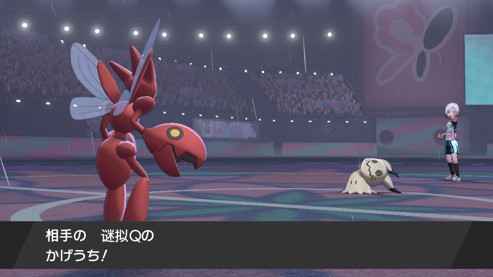
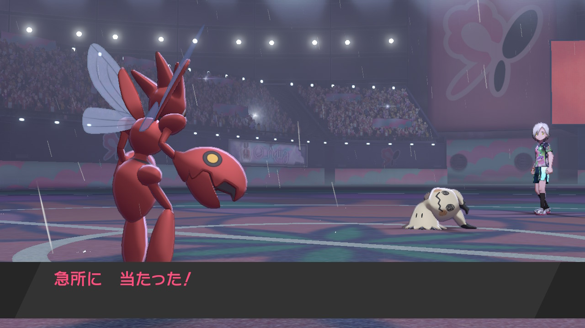
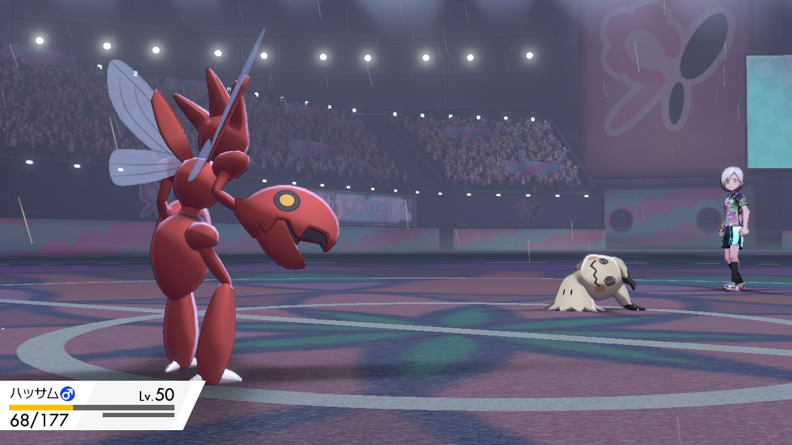
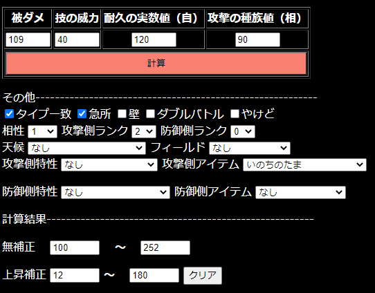

努力値計算機
被ダメから相手のポケモンの努力値(攻撃or特攻)を計算
被ダメ
技の威力
耐久の実数値（自）
攻撃の種族値（相）
その他----------------------------------------------------------
タイプ一致
急所
壁
ダブルバトル
やけど 相性
1/4
1/2
1
2
4
攻撃側ランク
6
5
4
3
2
1
0
-1
-2
-3
-4
-5
-6
防御側ランク
6
5
4
3
2
1
0
-1
-2
-3
-4
-5
-6
天候
なし
あめ(水技)
あめ(炎技)
はれ（炎技）
はれ（水技）
あられ
すなあらし（岩タイプ）
フィールド
なし
フィールド強化
フィールド弱化
攻撃側特性
なし
アナライズ
いろめがね
エレキスキン
かたいツメ
がんじょうあご
げきりゅう
ごりむちゅう
こんじょう
サンパワー
しんりょく
すいほう
スカイスキン
すてみ
スナイパー
すなのちから
スロースタート
ダークオーラ
ちからづく
ちからもち
てきおうりょく
てつのこぶし
テクニシャン
とうそうしん(弱体)
とうそうしん(弱体)
どくぼうそう
ねつぼうそう
ノーマルスキン
はがねつかい
はがねのせいしん
バッテリー
はりきり
はりこみ
パワースポット
パンクロック
フェアリーオーラ
フェアリースキン
プラス
フラワーギフト
フリーズスキン
ブレインフォース
へんげんじさい
マイナス
むしのしらせ
メガランチャー
もうか
もらいび
ヨガパワー
よわき
リベロ
攻撃側アイテム
なし
いのちのたま
こころのしずく
こだわりはちまき
こだわりメガネ
こんごうだま
しらたま
タイプ強化アイテム(x1.2)
たつじんのおび
ちからのはちまき
でんきだま
ノーマルジェル
はっきんだま
ふといほね
メトロノーム（2発目）
メトロノーム（3発目）
メトロノーム（4発目）
メトロノーム（5発目）
メトロノーム（6発目）
ものしりめがね
防御側特性
なし
あついしぼう
オーラブレイク
かんそうはだ
くさのけがわ
こおりのりんぷん
すいほう
たいねつ
ハードロック
パンクロック
ファーコート
ファントムガード
フィルター
ふしぎなウロコ
フラワーギフト
プリズムアーマー
フレンドガード
マルチスケイル
もふもふ
もふもふ（ほのお技）
防御側アイテム
なし
しんかのきせき
とつげきチョッキ
メタルパウダー
半減実
しんかいのウロコ
計算結果-------------------------------------------------------
無補正
～
上昇補正
～
使い方
攻撃（特攻）努力値を計算したい相手の能力上昇を確認します。
技を受けます。この時に急所判定や、タイプ相性、タイプ一致かを確認します。
被ダメを計算し、上記の計算機に各値を入力します。
タイプ相性やランク、アイテム、その他の条件を「その他」の項目で入力します。
条件があっているか確認でき次第、「計算」ボタンを押します。
計算結果に性格無補正の努力値範囲と上昇補正の努力値の範囲が表示されます。
使用例
ハッサムvsミミッキュ対面
ミミッキュはA2段階上昇
技はかげうち！タイプ一致上昇

そしてきゅうしょ！

いのちの玉をもっていた
被ダメはHPMAXからこの体力なので被ダメは109

これらの条件を計算機に入力し、計算！

統計的にようきASが多いので、相手のミミッキュは無補正でA252と予想できる。
更新情報
レイアウト調整中 ポケモンリスト 技リスト追加予定 2020/8/29